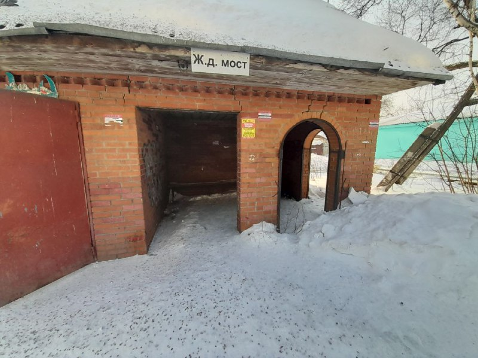
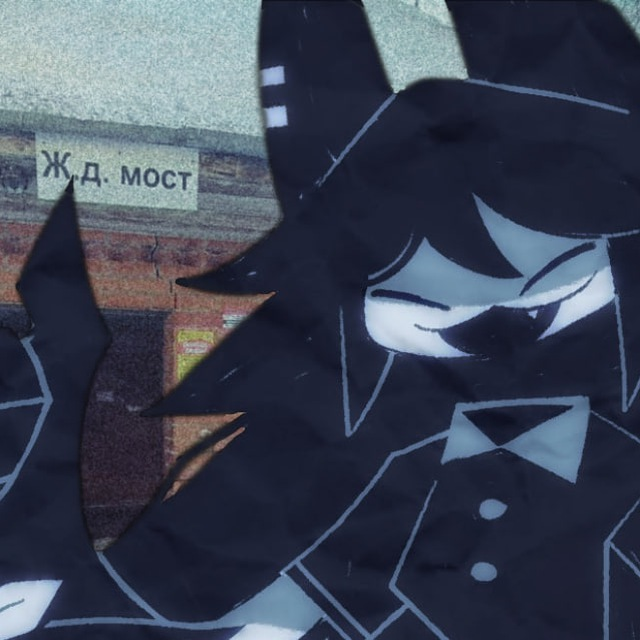
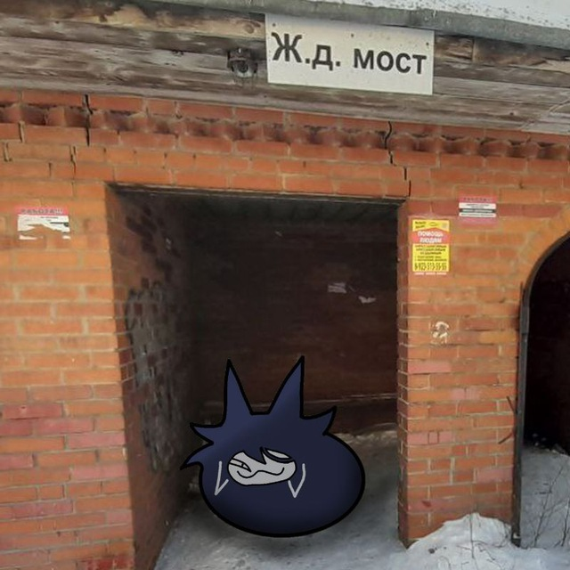

Жд мост - Обычная старая автобусная остановка с странной пристройкой находящиеся в Тайге... Но это не просто остановка! Это является локайной религией и мемом среди некоторых участников телеграмм канала "Fundamental paper education conf 📝🔪". Оно не имеет практически никакого скрытого подтекста но оно важно!

Валерий Мотылёк
Создателем данного легендарного мема является участник чата "Твиттер чат Илона маска" который является собственностью телеграмм канала "Fundamental paper education conf 📝🔪" под ником "Валерий Мотылёк". Мне кажется, мне не надо говорить что изображено на аватарке, вы и так все знаете :). Человек в чате общительный и готов поддержать диалог, не токсичен. Любимое число: 76, не знаю почему.

Ладно
Он продолжил мем, стал называть Валерия Мотылька "Жд мост" так как пригляделся на аватарку Валерия Мотылька. также является участником чата "Твиттер чат Илона маска". Человек общительный, не спит уже 3 дня(((. ПОМОГИТЕ!!!!! Изначально была просто аватарка с Мисс Циркуль - кот. Теперь там есть и ЖД мост. Проживает в Казахстане, сталкер Вадима >:)
.jpeg)
Однажды пользователь "Валерий Мотылёк" поставил на фон авы ЖД мост после поездки в Тайгу. После чего пользователь "Ладно" приглядевшись к аватарке написал в чате "Ж. Д. Мост". Затем фраза "Жд мост" стала легендарной хоть и не имела смысла :). Далее "Ладно" изменил тоже аватарку с фоном ЖД моста. Затем появился кружок в который присоединились некоторое количество пользователей. Теперь сайт :)